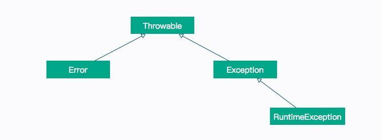

- 00 开篇词：JVM，一块难啃的骨头.md.html
- 01 一探究竟：为什么需要 JVM？它处在什么位置？.md.html
- 02 大厂面试题：你不得不掌握的 JVM 内存管理.md.html
- 03 大厂面试题：从覆盖 JDK 的类开始掌握类的加载机制.md.html
- 04 动手实践：从栈帧看字节码是如何在 JVM 中进行流转的.md.html
- 05 大厂面试题：得心应手应对 OOM 的疑难杂症.md.html
- 06 深入剖析：垃圾回收你真的了解吗？（上）.md.html
- 07 深入剖析：垃圾回收你真的了解吗？（下）.md.html
- 08 大厂面试题：有了 G1 还需要其他垃圾回收器吗？.md.html
- 09 案例实战：亿级流量高并发下如何进行估算和调优.md.html
- 10 第09讲：案例实战：面对突如其来的 GC 问题如何下手解决.md.html
- 11 第10讲：动手实践：自己模拟 JVM 内存溢出场景.md.html
- 12 第11讲：动手实践：遇到问题不要慌，轻松搞定内存泄漏.md.html
- 13 工具进阶：如何利用 MAT 找到问题发生的根本原因.md.html
- 14 动手实践：让面试官刮目相看的堆外内存排查.md.html
- 15 预警与解决：深入浅出 GC 监控与调优.md.html
- 16 案例分析：一个高死亡率的报表系统的优化之路.md.html
- 17 案例分析：分库分表后，我的应用崩溃了.md.html
- 18 动手实践：从字节码看方法调用的底层实现.md.html
- 19 大厂面试题：不要搞混 JMM 与 JVM.md.html
- 20 动手实践：从字节码看并发编程的底层实现.md.html
- 21 动手实践：不为人熟知的字节码指令.md.html
- 22 深入剖析：如何使用 Java Agent 技术对字节码进行修改.md.html
- 23 动手实践：JIT 参数配置如何影响程序运行？.md.html
- 24 案例分析：大型项目如何进行性能瓶颈调优？.md.html
- 25 未来：JVM 的历史与展望.md.html
- 26 福利：常见 JVM 面试题补充.md.html
21 动手实践：不为人熟知的字节码指令
本课时我们主要分享一个实践案例：不为人熟知的字节码指令。
下面将通过介绍 Java 语言中的一些常见特性，来看一下字节码的应用，由于 Java 特性非常多，这里我们仅介绍一些经常遇到的特性。javap 是手中的利器，复杂的概念都可以在这里现出原形，并且能让你对此产生深刻的印象。
本课时代码比较多，相关代码示例都可以在仓库中找到，建议实际操作一下。
异常处理
在上一课时中，细心的你可能注意到了，在 synchronized 生成的字节码中，其实包含两条 monitorexit 指令，是为了保证所有的异常条件，都能够退出。
这就涉及到了 Java 字节码的异常处理机制，如下图所示。

如果你熟悉 Java 语言，那么对上面的异常继承体系一定不会陌生，其中，Error 和 RuntimeException 是非检查型异常（Unchecked Exception），也就是不需要 catch 语句去捕获的异常；而其他异常，则需要程序员手动去处理。
异常表
在发生异常的时候，Java 就可以通过 Java 执行栈，来构造异常栈。回想一下第 02 课时中的栈帧，获取这个异常栈只需要遍历一下它们就可以了。
但是这种操作，比起常规操作，要昂贵的多。Java 的 Log 日志框架，通常会把所有错误信息打印到日志中，在异常非常多的情况下，会显著影响性能。
我们还是看一下上一课时生成的字节码：
void doLock();
descriptor: ()V
flags:
Code:
stack=2, locals=3, args_size=1
0: aload_0
1: getfield #3 // Field lock:Ljava/lang/Object;
4: dup
5: astore_1
6: monitorenter
7: getstatic #4 // Field java/lang/System.out:Ljava/io/PrintStream;
10: ldc #8 // String lock
12: invokevirtual #6 // Method java/io/PrintStream.println:(Ljava/lang/String;)V
15: aload_1
16: monitorexit
17: goto 25
20: astore_2
21: aload_1
22: monitorexit
23: aload_2
24: athrow
25: return
Exception table:
from to target type
7 17 20 any
20 23 20 any
可以看到，编译后的字节码，带有一个叫 Exception table 的异常表，里面的每一行数据，都是一个异常处理器：
- from 指定字节码索引的开始位置
- to 指定字节码索引的结束位置
- target 异常处理的起始位置
- type 异常类型
也就是说，只要在 from 和 to 之间发生了异常，就会跳转到 target 所指定的位置。
finally
通常我们在做一些文件读取的时候，都会在 finally 代码块中关闭流，以避免内存的溢出。关于这个场景，我们再分析一下下面这段代码的异常表。
import java.io.FileInputStream;
import java.io.FileNotFoundException;
import java.io.IOException;
import java.io.InputStream;
public class A {
public void read() {
InputStream in = null;
try {
in = new FileInputStream("A.java");
} catch (FileNotFoundException e) {
e.printStackTrace();
} finally {
if (null != in) {
try {
in.close();
} catch (IOException e) {
e.printStackTrace();
}
}
}
}
}
上面的代码，捕获了一个 FileNotFoundException 异常，然后在 finally 中捕获了 IOException 异常。当我们分析字节码的时候，却发现了一个有意思的地方：IOException 足足出现了三次。
Exception table:
from to target type
17 21 24 Class java/io/IOException
2 12 32 Class java/io/FileNotFoundException
42 46 49 Class java/io/IOException
2 12 57 any
32 37 57 any
63 67 70 Class java/io/IOException
Java 编译器使用了一种比较傻的方式来组织 finally 的字节码，它分别在 try、catch 的正常执行路径上，复制一份 finally 代码，追加在 正常执行逻辑的后面；同时，再复制一份到其他异常执行逻辑的出口处。
这也是下面这段方法不报错的原因，都可以在字节码中找到答案。
//B.java
public int read() {
try {
int a = 1 / 0;
return a;
} finally {
return 1;
}
}
下面是上面程序的字节码，可以看到，异常之后，直接跳转到序号 8 了。
stack=2, locals=4, args_size=1
0: iconst_1
1: iconst_0
2: idiv
3: istore_1
4: iload_1
5: istore_2
6: iconst_1
7: ireturn
8: astore_3
9: iconst_1
10: ireturn
Exception table:
from to target type
0 6 8 any
装箱拆箱
在刚开始学习 Java 语言的你，可能会被自动装箱和拆箱搞得晕头转向。Java 中有 8 种基本类型，但鉴于 Java 面向对象的特点，它们同样有着对应的 8 个包装类型，比如 int 和 Integer，包装类型的值可以为 null，很多时候，它们都能够相互赋值。
我们使用下面的代码从字节码层面上来观察一下：
public class Box {
public Integer cal() {
Integer a = 1000;
int b = a * 10;
return b;
}
}
上面是一段简单的代码，首先使用包装类型，构造了一个值为 1000 的数字，然后乘以 10 后返回，但是中间的计算过程，使用了普通类型 int。
public java.lang.Integer read();
descriptor: ()Ljava/lang/Integer;
flags: ACC_PUBLIC
Code:
stack=2, locals=3, args_size=1
0: sipush 1000
3: invokestatic #2 // Method java/lang/Integer.valueOf:(I)Ljava/lang/Integer;
6: astore_1
7: aload_1
8: invokevirtual #3 // Method java/lang/Integer.intValue:()I
11: bipush 10
13: imul
14: istore_2
15: iload_2
16: invokestatic #2 // Method java/lang/Integer.valueOf:(I)Ljava/lang/Integer;
19: areturn
通过观察字节码，我们发现赋值操作使用的是 Integer.valueOf 方法，在进行乘法运算的时候，调用了 Integer.intValue 方法来获取基本类型的值。在方法返回的时候，再次使用了 Integer.valueOf 方法对结果进行了包装。
这就是 Java 中的自动装箱拆箱的底层实现。
但这里有一个 Java 层面的陷阱问题，我们继续跟踪 Integer.valueOf 方法。
@HotSpotIntrinsicCandidate
public static Integer valueOf(int i) {
if (i >= IntegerCache.low && i <= IntegerCache.high)
return IntegerCache.cache[i + (-IntegerCache.low)];
return new Integer(i);
}
这个 IntegerCache，缓存了 low 和 high 之间的 Integer 对象，可以通过 -XX:AutoBoxCacheMax 来修改上限。
下面是一道经典的面试题，请考虑一下运行代码后，会输出什么结果？
public class BoxCacheError{
public static void main(String[] args) {
Integer n1 = 123;
Integer n2 = 123;
Integer n3 = 128;
Integer n4 = 128;
System.out.println(n1 == n2);
System.out.println(n3 == n4);
}
当我使用 java BoxCacheError 执行时，是 true,false；当我加上参数 java -XX:AutoBoxCacheMax=256 BoxCacheError 执行时，结果是 true,ture，原因就在于此。
数组访问
我们都知道，在访问一个数组长度的时候，直接使用它的属性 .length 就能获取，而在 Java 中却无法找到对于数组的定义。
比如 int[] 这种类型，通过 getClass（getClass 是 Object 类中的方法）可以获取它的具体类型是 [I。
其实，数组是 JVM 内置的一种对象类型，这个对象同样是继承的 Object 类。
我们使用下面一段代码来观察一下数组的生成和访问。
public class ArrayDemo {
int getValue() {
int[] arr = new int[]{
1111, 2222, 3333, 4444
};
return arr[2];
}
int getLength(int[] arr) {
return arr.length;
}
}
首先看一下 getValue 方法的字节码。
int getValue();
descriptor: ()I
flags:
Code:
stack=4, locals=2, args_size=1
0: iconst_4
1: newarray int
3: dup
4: iconst_0
5: sipush 1111
8: iastorae
9: dup
10: iconst_1
11: sipush 2222
14: iastore
15: dup
16: iconst_2
17: sipush 3333
20: iastore
21: dup
22: iconst_3
23: sipush 4444
26: iastore
27: astore_1
28: aload_1
29: iconst_2
30: iaload
31: ireturn
可以看到，新建数组的代码，被编译成了 newarray 指令。数组里的初始内容，被顺序编译成了一系列指令放入：
- sipush 将一个短整型常量值推送至栈顶；
- iastore 将栈顶 int 型数值存入指定数组的指定索引位置。
为了支持多种类型，从操作数栈存储到数组，有更多的指令：bastore、castore、sastore、iastore、lastore、fastore、dastore、aastore。
数组元素的访问，是通过第 28 ~ 30 行代码来实现的：
-
aload_1 将第二个引用类型本地变量推送至栈顶，这里是生成的数组；
-
iconst_2 将 int 型 2 推送至栈顶；
-
iaload 将 int 型数组指定索引的值推送至栈顶。
值得注意的是，在这段代码运行期间，有可能会产生 ArrayIndexOutOfBoundsException，但由于它是一种非捕获型异常，我们不必为这种异常提供异常处理器。
我们再看一下 getLength 的字节码，字节码如下：
int getLength(int[]);
descriptor: ([I)I
flags:
Code:
stack=1, locals=2, args_size=2
0: aload_1
1: arraylength
2: ireturn
可以看到，获取数组的长度，是由字节码指令 arraylength 来完成的。
foreach
无论是 Java 的数组，还是 List，都可以使用 foreach 语句进行遍历，比较典型的代码如下：
import java.util.List;
public class ForDemo {
void loop(int[] arr) {
for (int i : arr) {
System.out.println(i);
}
}
void loop(List<Integer> arr) {
for (int i : arr) {
System.out.println(i);
}
}
虽然在语言层面它们的表现形式是一致的，但实际实现的方法并不同。我们先看一下遍历数组的字节码：
void loop(int[]);
descriptor: ([I)V
flags:
Code:
stack=2, locals=6, args_size=2
0: aload_1
1: astore_2
2: aload_2
3: arraylength
4: istore_3
5: iconst_0
6: istore 4
8: iload 4
10: iload_3
11: if_icmpge 34
14: aload_2
15: iload 4
17: iaload
18: istore 5
20: getstatic #2 // Field java/lang/System.out:Ljava/io/PrintStream;
23: iload 5
25: invokevirtual #3 // Method java/io/PrintStream.println:(I)V
28: iinc 4, 1
31: goto 8
34: return
可以很容易看到，它将代码解释成了传统的变量方式，即 for(int i;i<length;i++) 的形式。
而 List 的字节码如下：
void loop(java.util.List<java.lang.Integer>);
Code:
0: aload_1
1: invokeinterface #4, 1 // InterfaceMethod java/util/List.iterator:()Ljava/util/Iterator;
6: astore_2-
7: aload_2
8: invokeinterface #5, 1 // InterfaceMethod java/util/Iterator.hasNext:()Z
13: ifeq 39
16: aload_2
17: invokeinterface #6, 1 // InterfaceMethod java/util/Iterator.next:()Ljava/lang/Object;
22: checkcast #7 // class java/lang/Integer
25: invokevirtual #8 // Method java/lang/Integer.intValue:()I
28: istore_3
29: getstatic #2 // Field java/lang/System.out:Ljava/io/PrintStream;
32: iload_3
33: invokevirtual #3 // Method java/io/PrintStream.println:(I)V
36: goto 7
39: return
它实际是把 list 对象进行迭代并遍历的，在循环中，使用了 Iterator.next() 方法。
使用 jd-gui 等反编译工具，可以看到实际生成的代码：
void loop(List<Integer> paramList) {
for (Iterator<Integer> iterator = paramList.iterator(); iterator.hasNext(); ) {
int i = ((Integer)iterator.next()).intValue();
System.out.println(i);
}
}
注解
注解在 Java 中得到了广泛的应用，Spring 框架更是由于注解的存在而起死回生。注解在开发中的作用就是做数据约束和标准定义，可以将其理解成代码的规范标准，并帮助我们写出方便、快捷、简洁的代码。 那么注解信息是存放在哪里的呢？我们使用两个 Java 文件来看一下其中的一种情况。 MyAnnotation.java
public @interface MyAnnotation {
}
AnnotationDemo
@MyAnnotation
public class AnnotationDemo {
@MyAnnotation
public void test(@MyAnnotation int a){
}
}
下面我们来看一下字节码信息。
{
public AnnotationDemo();
descriptor: ()V
flags: ACC_PUBLIC
Code:
stack=1, locals=1, args_size=1
0: aload_0
1: invokespecial #1 // Method java/lang/Object."<init>":()V
4: return
LineNumberTable:
line 2: 0
public void test(int);
descriptor: (I)V
flags: ACC_PUBLIC
Code:
stack=0, locals=2, args_size=2
0: return
LineNumberTable:
line 6: 0
RuntimeInvisibleAnnotations:
0: #11()
RuntimeInvisibleParameterAnnotations:
0:
0: #11()
}
SourceFile: "AnnotationDemo.java"
RuntimeInvisibleAnnotations:
0: #11()
可以看到，无论是类的注解，还是方法注解，都是由一个叫做 RuntimeInvisibleAnnotations 的结构来存储的，而参数的存储，是由 RuntimeInvisibleParameterAnotations 来保证的。
小结
本课时我们简单介绍了一下工作中常见的一些问题，并从字节码层面分析了它的原理，包括异常的处理、finally 块的执行顺序；以及隐藏的装箱拆箱和 foreach 语法糖的底层实现。
由于 Java 的特性非常多，这里不再一一列出，但都可以使用这种简单的方式，一窥究竟。可以认为本课时属于抛砖引玉，给出了一种学习思路。
另外，也可以对其中的性能和复杂度进行思考。可以注意到，在隐藏的装箱拆箱操作中，会造成很多冗余的字节码指令生成。那么，这个东西会耗性能吗？答案是肯定的，但是也不必纠结于此。
你所看到的字节码指令，可能洋洋洒洒几千行，看起来很吓人，但执行速度几乎都是纳秒级别的。Java 的无数框架，包括 JDK，也不会为了优化这种性能对代码进行限制。了解其原理，但不要舍本逐末，比如减少一次 Java 线程的上下文切换，就比你优化几千个装箱拆箱动作，来的更快捷一些。